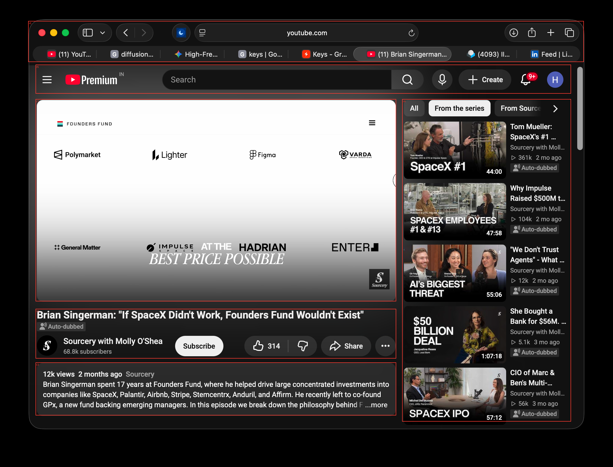
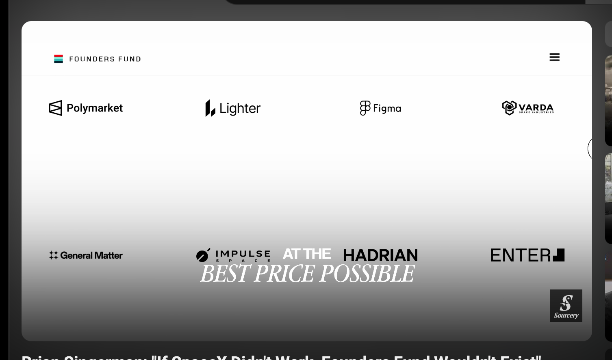
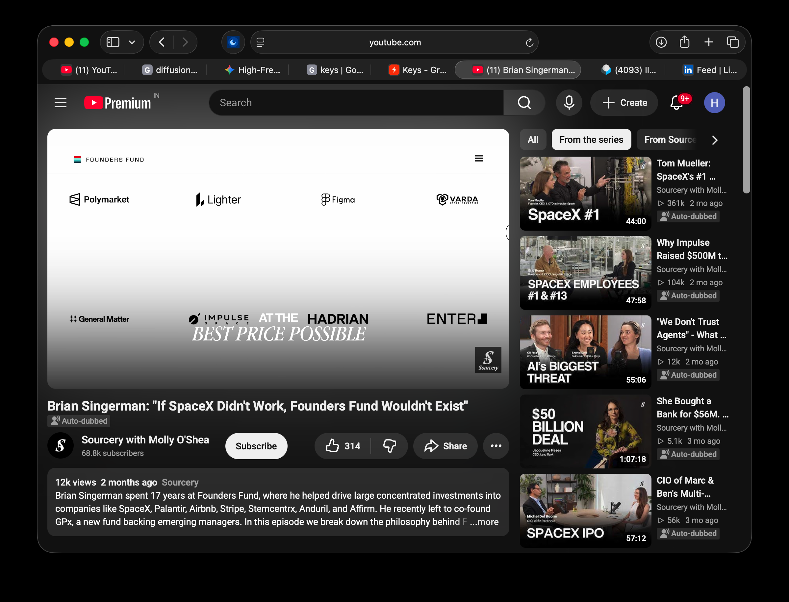

Recursive screen interpretation
Model hypotheses; inspect evidence and uncertainty.

Reconciled context
{}r0: browser_window

{
"id": "r0",
"parent": null,
"depth": 0,
"label": "browser_window",
"box": [
0,
0,
2398,
1830
],
"status": "analyzed",
"crop_file": "crops/r0.png",
"crop_box": [
0,
0,
2398,
1830
],
"observations": [
"macOS dark-themed browser window displaying YouTube Premium",
"Video player showing a slide with 'FOUNDERS FUND' and various startup logos (Polymarket, Lighter, Figma, VARDA, General Matter, IMPULSE, HADRIAN, ENTER)",
"Video title: 'Brian Singerman: \"If SpaceX Didn't Work, Founders Fund Wouldn't Exist\"'",
"Channel: 'Sourcery with Molly O'Shea'",
"Right sidebar with recommended/series videos related to Sourcery and SpaceX/finance topics"
],
"interpretations": [
"Standard YouTube desktop interface watching a business/tech podcast interview episode"
],
"uncertainties": [],
"proposal_issues": []
}r1: video_player

{
"id": "r1",
"parent": "r0",
"depth": 1,
"label": "video_player",
"box": [
139,
388,
1549,
1180
],
"status": "uninspected",
"reason": "Main video player area",
"crop_file": "crops/r1.png",
"crop_box": [
91,
340,
1597,
1228
]
}r2: video_details

{
"id": "r2",
"parent": "r0",
"depth": 1,
"label": "video_details",
"box": [
139,
1210,
1549,
1404
],
"status": "uninspected",
"reason": "Title, channel info, subscribe button, and engagement actions"
}r3: video_description
{
"id": "r3",
"parent": "r0",
"depth": 1,
"label": "video_description",
"box": [
139,
1420,
1549,
1627
],
"status": "uninspected",
"reason": "Video description box containing summary text"
}r4: sidebar_recommendations
{
"id": "r4",
"parent": "r0",
"depth": 1,
"label": "sidebar_recommendations",
"box": [
1573,
388,
2233,
1651
],
"status": "uninspected",
"reason": "List of recommended next videos in the series"
}r5: youtube_header
{
"id": "r5",
"parent": "r0",
"depth": 1,
"label": "youtube_header",
"box": [
139,
253,
2233,
366
],
"status": "uninspected",
"reason": "YouTube top navigation bar with search and profile icon"
}r6: browser_tabbar_and_url
{
"id": "r6",
"parent": "r0",
"depth": 1,
"label": "browser_tabbar_and_url",
"box": [
110,
82,
2283,
242
],
"status": "uninspected",
"reason": "Safari browser address bar and tab bar"
}